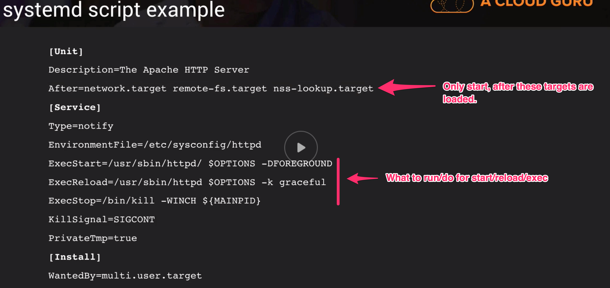
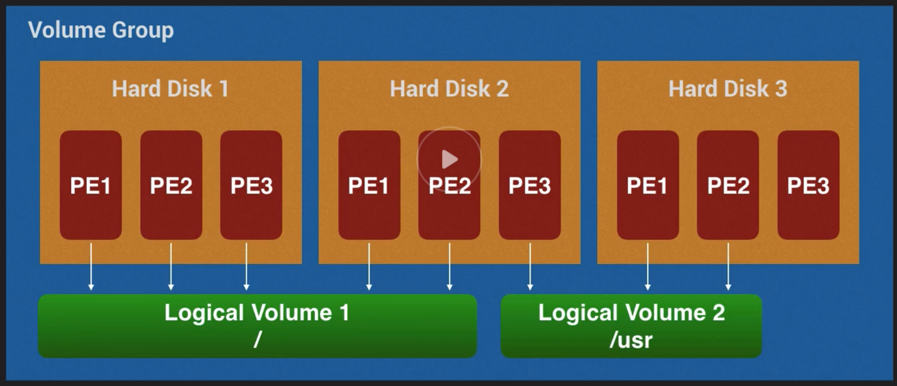

LPIC-1 #
About Linux #
-
Components of Linux
- Boot Loader
- Software manages boot process till the OS starts to load
- The Kernel
- Core of OS, manages OS, CPU and peripherals
- Daemons
- Processes lurking in the background that start during booth or after login (e.g. time)
- Shell
- Graphical Server
- Subsystem to display graphic
- AKA x-server
- Desktop Environment
- Actual GUI for the user
- Applications
- Boot Loader
-
Why Linux ?
- Free
- Stable
- Secure
- Open Source
- Free to run the program for any purpose.
- Free to study how the program works
- Free to change how the program works
- Free to redistribute copies
-
Distributions
- What is a distribution ?
- Collection of software
- Package management system
- Helps you install, upgrade and remove software
- Keeps your server up to date
- Popular Examples
- Red Hat
- CentOS (based on red hat)
- Fedora
- Debian
- Ubuntu
- Mint
- SuSE
- Gentee
- Arch
- …
- Red Hat
- What is a distribution ?
-
VirtualBox Bridged Networking
- If you do this, instead of NAT, you can SSH into the box instead of using the VirtualBox UI
System Architecture #
-
Boot the system
- UEFI is the new version of BIOS
- BIOS booting
- -> BIOS boot from particular disk
- -> This disk has a MBR (Master Boot Record), which stores the Boot Loader
- -> The boot loader knows where the kernel is on disk and boot the OS
- UEFI
- UEFI Boot Loader (which lives on your disk) (is not in the MBR)
- This boot loader calls the kernel, which boots the OS
- BIOS booting
- MBR : Information in the first sector of a disk that tells where and how the OS is.
- GRUB (Grand Unified Bootloader) : Boot loader package that supports multiple OS’s on a ps
- You can modify the settings during bootup and make them persist by directly modifying the config files used by the GRUB
- For Ubuntu in VirtualBox, tap
escduring bootup
- Kernel is lowest level of replacable software to your hardware
- Once the Kernel has attached the root file system, it will run a program called
init initis always the first process ran by a linux system, therefor, it gets always a PID of1- There are a few different
initprograms that existsysvinit: Which based onsysv, oldest and firstsystemd: Low memory boot process, mainstream, almost used everywhere nowupstart: Created by Ubuntu, but they switched tosystemdin the end.
- There are a few different
quietfor kernel param issupress most boot messages. So less verbosity for bootup
- UEFI is the new version of BIOS
-
Determine and configure hardware settings
udev: Device manager for your kernel- Gives low level access to the linux device tree
- Handles user space events (happens when hardware is removed or added to the system)
- Eg. Loading firmware
- Provided by temporary filesystem (
tmpfs)- This is how
udevprovides access, which is mounted to/devon startup
- This is how
/etc/udev/rules.d: Folder for custom rules for the device managerudev.- You can create rules for what should happen/ran when something is plugged in or unplugged
dbus- Inter-process communication mechanism
- Framework that allows processes to talk to each other
- Secure
- Reliable
- Provides high level OOP interface
sysfs- Virtual filesystem
- Presents information about various kernel subsystems
- Hardware devices
- Drivers
- Mounted to
/sys
procfs- Similar to
sysfs - Presents information about various processes
- Presents information about system information
- mounted to
/proc- Can be used to interface with the kernel
- Change parameters on the fly
- Each running process will have a directory in
/proc/<PID>+ various other stuff- eg.
/proc/cmdline-> Kernel name from bootup - eg.
/proc/version-> Kernel version - eg.
/proc/cpuinfo-> CPU info
- eg.
- Similar to
lsmod- List all Kernel modules in use and by which modules
modprobe- Add or remove loadable kernel modules to/from the kernel
udevrelies uponmodprobto load drivers for automatically detected hardware
rmmod- Remove kernel module (prob need root for that)
lspci- Shows all PCI connected devices to the system
- Show Device IRQ settings
-
Runlevels and boot targets
- Run Level : Number between 0 <-> 6 (max 9), determines which scripts/programs are run
- Levels :
0- Halt or shut down system1- Single user mode2- Multi user mode without networking3- Normal boot (multi user mode + networking)4- Unused/customizable5- Run level 3 + GUI display manager (if installed, so the graph env)6- Reboot
- Based on the run level, more or less scripts will be ran which are located in different places (e.g.
Systemdorsysv)inittab(came withsysv)- Ubuntu :
/etc/rc0.d…/etc/rc6.dfolders with scripts that are ran based on correlating run level.rcS.dus ran for any run level.- This is still there for compatibility reasons
systemdrun levels :- Also has scripts
- System scripts
/etc/systemd/system - Package Scripts
/usr/lib/systemd/system /etc/systemd/systemtakes precedence over/usr/lib/systemd/systen- Uses targets (similar-ish to the other run level style)
- Run Level - Systemd Target
0- runlevel0.target, poweroff.target1- runlevel1.target, rescue.target2,4- runlevel2.target, runlevel4.target, multi-user.target3- runlevel3.target, multi-user.target5- runlevel5.target, graphical.target6- runlevel6.target, reboot.targetemergency- emergency.target
- Levels :
- with
init/telinityou can tell what level to run
- Run Level : Number between 0 <-> 6 (max 9), determines which scripts/programs are run

-
systemctl- How you drive/control
systemd - How you start, stop, restart applications (just like
kubectl) - E.g.
- Status sound card :
sudo systemctl status sound.target - stop sound card :
sudo systemctl stop sound.target - Status sound card :
sudo systemctl status sound.target - start sound card :
sudo systemctl start sound.target - Status sound card :
sudo systemctl status sound.target
- Status sound card :
- How you drive/control
-
Commands
ps: List active processesps aux | head: Shows the top processes where you will seee/sbin/initdmesg: Kernel messages logged from the last bootuphead: take firstnlinestail: take lastnlinesless: page through a long resultman: manualsudo wall: Send a message to anyone logged in/has open shell (like announce a reboot)which: Where is an app running from?
Linux Installation and Package Management #
-
Design hard disk layout
/: root/usr: user binaries installed/home:/boot: All related to booting/var: Variable data (e.g. system logs …)/tmp: Everyone on the system can write to
-
Partitions
- Divide storage in multiple pieces
- Allows dual booting
- Separation of files
- Data organization
- System protection
- e.g. Separate partition for each user to separate and safeguard
- When you create a partition you need to mount them to directories.
- Every path in linux can be mounted to
- We can mount to :
/home/var/tmp/home/nick/blah/
- Remember like with Docker. You can have a folder
/home/ian/dbdatawith data in it.- When you mount a partition to
/home/ian/dbdata, the data in there will be hidden and overtaken with this mounted partition (like a volume with docker) - Once you unmoun the partition from that folder, the original data is again visible and accessible.
- When you mount a partition to
- We can mount to :
-
Swap
- Swap is a partition, used in case the RAM is full, Swap is used
- Unused pages fo the RAM will be saved in the SWAP partition
-
LVM
- Logical Volume Manager
- (like Disk Manager windows, on steroids)
- Allows to split disks into pools (Pools are also known as PE, Physical Extends)
- Create partitions from pools
- Can grow or shrink partitions

-
Install a boot manager
-
Boot Loader
- Boots a linux system
- Runs before the OS
- Can be configured from the operating system
- common boot loaders :
- LILO
- GRUB Legacy
- GRUB2
-
Configuring the
/boot/grub/grub.cfgresults in editing your boot loader logic -
Although the above is the auto generated result of
/etc/grub.dand/etc/default/grubusinggrub-mkconfig -
grub-probe -
grub-install: To install grub to the MBR of the specified disk (in case that didn’t happen yet) -
Revise
- update
sudo vi /etc/default/grubfile - run
sudo update-grub - restart to see changes in action
- update
-
-
Manage Shared Libraries
- Libraries : So typical libs/packages that bash scripts or actual code can use
- Key properties
- Shared
- Reusable
- Linking
- When your application wants to use these libraries, they should be linked to them
- Static Linking : Library is included in the application (each app has its own copy)
- Dynamic Linking : Different applications using the exact same copy of the library
- Update libraries in a single place
/etc/ld.so.conflists the locations of the shared libraries on your system.includestatements means it was split into other linked files
ldd: ldd prints the shared objects (shared libraries) required by each program or shared object specified on the command line.- e.g.
ldd /bin/ls
- e.g.
- When your application wants to use these libraries, they should be linked to them
-
Use debian package manager
dpkg: Debian Package Manager- install/upgrade/remove software
- low level tool
- (Does not automatically installes dependencies)
apt- Advanced packaging tool
- high level tool
- install/upgrade/remove software
- handles upgrading of entire system
- Handle all package dependencies automatically
- Uses online repositories
/etc/apt/sources.listis the list for mirrors ofaptand specifics on which repos per mirror to usemain: Officially supported softwarerestricted: supported software (not free under completely free license)xenial: current versionuniverse: community maintained softwaremultiverse: Not free software
apt-get update: update local package listsapt-get install <name>: Install softwareapt-get remove <name>: Uninstall software- ! does not remove remaining config files, use
dpkg --purge <name>for cleanup
- ! does not remove remaining config files, use
apt-cache depends <name>: Show what a app depends onapt-cache search <name>: Search for packages with a particular nameapt-get upgrade: Upgrade all current installed packages (respecting semver)apt-get dist-upgrade: upgrade everything and remove anything unused
-
wgetDownload a file to current location -
Use RPM and YUM package manager
- RPM
- RedHat Package Manager
- rpm command
- Low level tools
- install/upgrade/remove software
- YUM
- Yellowdog update/modifier
- replaced YUP (yellowdog updater)
- Utilites online repositories
- manages dependencies
- RPM
-
Quiz
- How do you temporarily add a directory to your shared library path? -
LD_LIBRARY_PATH
- How do you temporarily add a directory to your shared library path? -